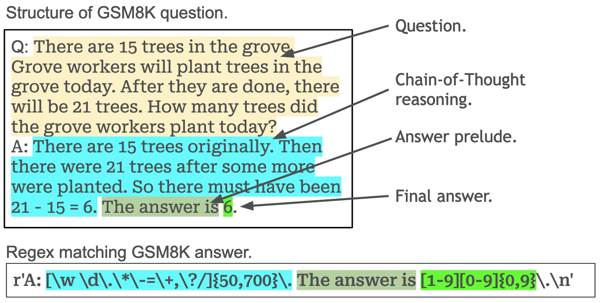
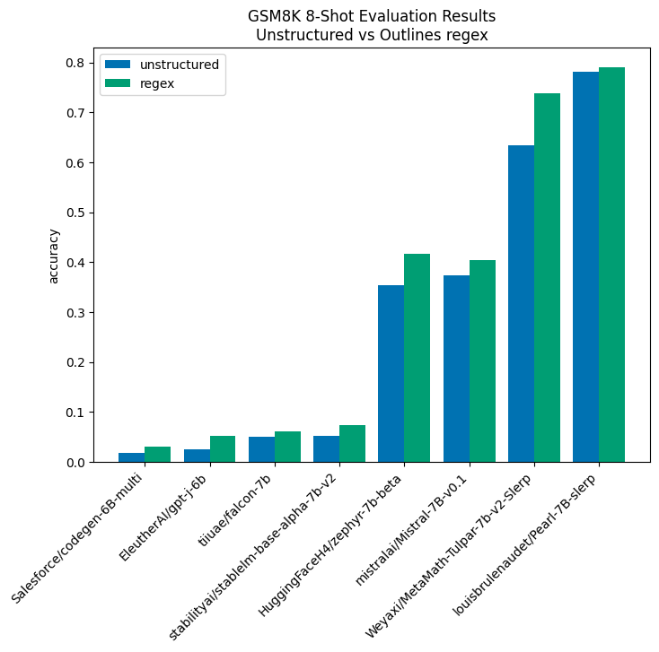
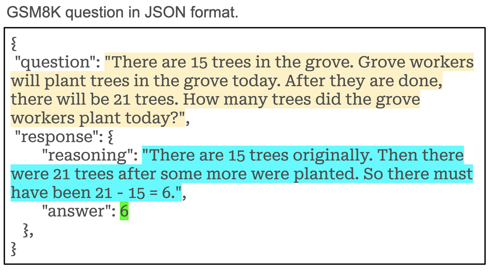
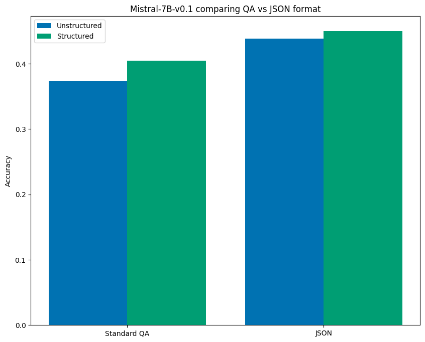
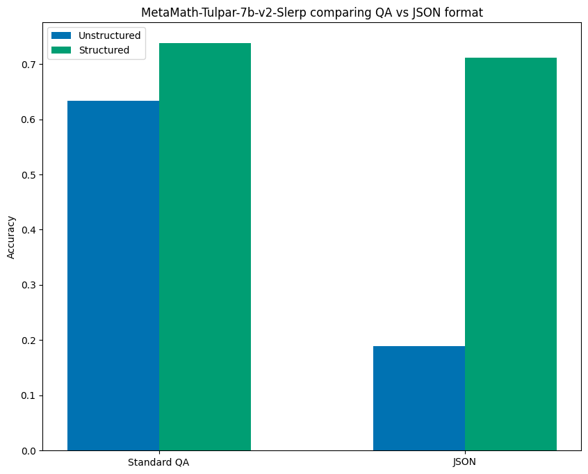

Structured Generation Improves LLM performance: GSM8K Benchmark
In this post we run an series of experiments that find that structured generation in Large Language Models (LLMs) leads to a consistent and often substantial improvement in model performance on the GSM8K evaluation set.
Key findings include:
- Across 8 different models, using structured generation can lead to a greater than 70% lift in performance and in all cases led to improvement in performance over unstructured generation.
- Additionally we find evidence previously unexplored benefits of structured generation: “prompt consistency” and “thought-control”.
- Even if structured output from an LLM is not essential to a project, structured generation is still worth using in your model for its performance benefits.
Experimental Setup
In order to test the impact of structured generation on the quality of LLM output we ran the GSM8K test set evaluations of 1319 grade school math word problems on 8 different models. We use a standardized 8-shot prompt used by the EleutherAI LM Evaluation Harness. We compared the result of parsing the unstructured output, closely replicating the behavior of the LM Evaluation Harness, with controlling the output using regex structured generation with Outlines.
Structure of GSM8K Questions and Answers
The GSM8K question/answers, despite not having an obvious format, do indeed contain a clear structure as we can see in the visualization below in one of the example questions from the 8-shot prompt:

One of the challenges when running evaluations is correctly parsing the output of the model. As you can see in the image, we can create a regex to match this inherent structure in the GSM8K data. A regex much like this one is used in the EleutherAI lm-evaluation-harness.
However structured generation can use this very regex not just to parse an output, but rather to guarantee the output adhere to this structure. This means that when using structured generation we never have to worry about whether or not we will be able to correctly parse the answer.
Results
The results of our experiments show that structured generation consistently improves model performance. This effect is particularly strong in under-performing models where structured generation can, in cases such as EleutherAI/gpt-j-6b, more than double performance (although, admittedly, it's not that impressive given the base score). Additionally performance gains were seen even in models specifically tuned to this task like Pearl-7B-slerp and MetaMath-Tulpar-7b-V2-slerp. These improvements can be seen in the visualization below:

In all cases there is performance improvement seen from using structured generation and in all but the top performing model, the improvement is greater than 10%.
JSON Structuring
By exploiting the inherent structure in the GSM8K benchmark prompt we were able to achieve consistent improvements across all models. Another reasonable approach to dealing with structure would be to better structure the prompt itself. JSON is a common format for structured data that allows us to easily use our model with other code (including our evaluation code). Because of it’s ubiquitous nature, it makes sense to reformat our original question, reasoning, answer data into JSON. Here is an example of the same questions reformatted into JSON.

In the case of Mistral-7B-v0.1 we found that using this format in the prompt alone, without structured generation, resulted in a 17.5% lift over the baseline unstructured prompt performance using the first QA prompt, and an 8.2% lift over even the structured result for the QA prompt. However enforcing structure on the JSON formatted prompt provided an even further lift of 20.7% over baseline performance! The chart below visualizes these results:

So even when the format of the prompt is able to dramatically improve bench mark performance, structured generation still leads to improved performance.
Structured Generation for Prompt Consistency
It turns out that not all models followed the above pattern where formatting the prompt as JSON improved unstructured results. MetaMath-Tulpar-7b-v2-Slerp had a significant drop in performance when the prompt was changed from the QA format to the JSON one, going from 63.4% accuracy to an abysmal 18.9% when using JSON.
What is interesting is that when using structured generation on both formats the results were much more consistent achieving comparable performance of 73.8% and 71.1% accuracy for QA and JSON formats respectively. The results can are visualized below:

This finding is particularly interesting in light of Sclar, et al’s Quantifying Language Model’s Sensitivity to Spurious Features in Prompt Design. This paper found that small changes in prompt format can have major impacts on the evaluation results. Our findings suggest structured generation might provide a means of ensuring more consistent performance across variance in prompt format. This is an opportunity for future research; a useful experiment would be to revisit Scalr, et al and use structured generation to see if it consistently reduces variance in the evaluation benchmarks across prompts.
Thought-Control
The standard prompt for the GSM8K evaluation set involves a reasoning step which allows the model to “think” before coming to its final conclusion. Wei, et al describe this method, in their paper Chain-of-Thought Prompting Elicits Reasoning in Large Language Models, as “Chain-of-Thought” and demonstrate that empirically this produces better results, specifically using the GSM8K data set.
In exploring the performance of different regular expressions we came across an unexpected, additional benefit of structured generation we call “Thought-control”. Thought-control involves limiting the number of characters the model has to “think”. Our current structure is to allow a minimum of 50 characters and a maximum of 700 character for the reasoning stage. This was chosen after a discovery that even slightly smaller upper bounds, such as 300 and 500, saw less improvement (in some cases no improvement). Early evidence suggest that increasing the lower bound may further improve performance.
Future work involves exploring the impact of thought-control on performance in more detail.
Conclusion
The initial value proposition of structure generation was simply that it allows you to have predictable output when working with LLMs. This is essential if you want to create non-trivial programs that consume LLM output as their input.
Our look at evaluating structured generations with GSM8K tells us that even if you don’t care about structured output you should still use structured generation as it will improve the performance of your models.
Additionally, we’ve found some initial evidence that structured generation may offer even more benefits: reduced variance across changes to prompt formats and finer control over the Chain-of-Thought reasoning step.
All of this combined points towards a future were structured generation is an essential part of working with LLMs.
Sign up for the private Beta of our upcoming product to get a glimpse of the future.